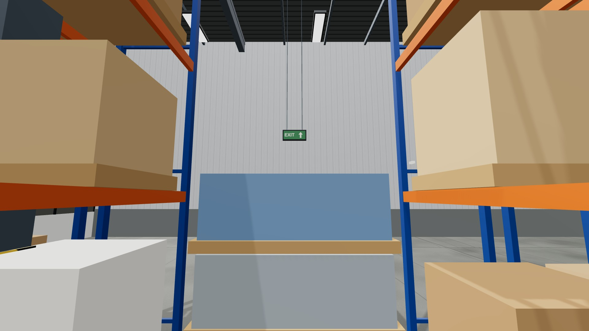

SG-09 points straight into a pallet block. Behind it is the sealed former exit.
Factory egress · findings

SG-09 points straight into a pallet block. Behind it is the sealed former exit.
Visual Vibes · factory egress · report